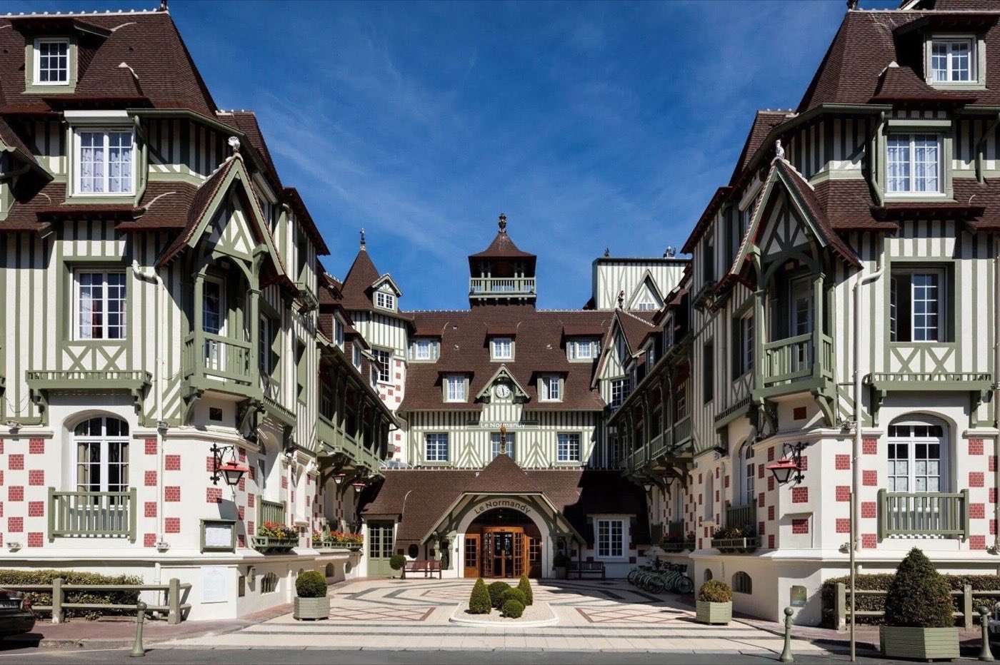

Thalasso en Normandie : 10 adresses classées, et une qui ferme dans quinze jours
La meilleure thalasso normande n'est pas à Trouville, et la deuxième n'est même pas au
bord de la mer. Dix centres classés à la note que nous leur avons déjà donnée, avec une
information de service à connaître avant de réserver quoi que ce soit pour l'automne.
Par Emmanuel Laveran, rédacteur hôtels et gastronomie✺Publié le 13 août 2026✺17 min de lecture
Le parcours marin du Thalazur Cabourg, troisième de ce classement avec
15,3/20. Photo : Thalazur, site officiel.
TL;DR : l'essentielSept notes reprises, trois adresses documentées, deux exclusions
Thalasso Normandy Barrière, Deauville, 17,2/20 : la meilleure note
normande de notre classement, et de loin. 1 400 m² de bassins dans la
thalasso historique de la Côte Fleurie.
Centre Thalasso Forges-les-Eaux, 15,8/20 : deuxième, et pourtant
à cinquante kilomètres de la mer, en Seine-Maritime. 900 m², à partir
de 160 € la nuit, le meilleur rapport de cette page.
Thalazur Ouistreham Riva Bella : à ne pas réserver pour l'automne.
L'établissement ferme le 30 août 2026 et ne rouvre qu'en juin 2027.
Le contre-pied : les Cures
Marines de Trouville, que la plupart des sélections placent en tête de la Normandie,
arrivent sixièmes de ce classement avec 13,2/20. Le bâtiment est
spectaculaire, la thalasso l'est moins, et notre note ne mesure pas la façade.
Notre méthode, et pourquoi deux adresses ont été écartées
Ce classement applique le Protocole LMHS, noté sur 20, celui de nos
palmarès de thalassothérapie : quatre piliers égaux de cinq points, après visite anonyme
dont la nuit et les soins sont payés par la rédaction. Il est doublé de
l'Indice Atlantique sur 5, le même instrument que dans notre
palmarès breton, qui mesure une seule chose : le rapport
réel du centre à l'océan, accès, eau de mer, exposition.
Sept de ces dix adresses ont déjà été notées par la rédaction, dans
notre palmarès national des 50 meilleurs hôtels et spas de France, dans notre sélection
francilienne ou dans celle du sud. Nous reprenons ces notes à l'identique,
sans recalcul : une même adresse ne porte jamais deux notes différentes sur ce site. Les
trois autres entrent sans note, faute de visite, et la mention « non noté » veut dire ce
qu'elle dit.
Deux établissements ont été écartés, et il faut expliquer pourquoi.
La Ferme Saint-Siméon à Honfleur et l'Hôtel de Bourgtheroulde
à Rouen sont deux belles maisons, mais ni l'une ni l'autre ne pratique la
thalassothérapie : pas d'eau de mer, pas de bassin marin, pas de cure. Les faire
figurer dans un classement de thalasso reviendrait à noter un spa urbain sur un critère
qu'il ne prétend pas remplir. La Ferme Saint-Siméon a d'ailleurs sa place ailleurs, et une
bien meilleure : elle est classée 9,0/10 avec un Indice Héritage Normand de 5/5,
le seul maximum de la page, dans notre palmarès des
hôtels de charme en Normandie, et nous lui consacrons un avis détaillé.
Le tableau : dix adresses, de Deauville au pays de Bray
Les sept centres déjà notés, au Protocole LMHS sur 20
Rang
Établissement
Commune
Protocole LMHS
Indice Atlantique
Nuit dès
Le signe distinctif
01
Thalasso Normandy Barrière
Deauville
17,2/20
4,5/5
300 €
1 400 m² de bassins, la thalasso historique
02
Centre Thalasso Forges-les-Eaux
Forges-les-Eaux
15,8/20
2,0/5
160 €
900 m², à 50 km de la mer, le meilleur prix
03
Thalazur Cabourg
Cabourg
15,3/20
4,5/5
175 €
290 m², 19 cabines, face à la plage
04
Les Manoirs de Tourgéville
Tourgéville
13,7/20
2,5/5
260 €
Manoirs normands, spa Nuxe, dans les terres
05
Hôtel Barrière Le Normandy
Deauville
13,5/20
4,0/5
300 €
Prestige balnéaire, plage privée
06
Les Cures Marines Trouville
Trouville-sur-Mer
13,2/20
4,5/5
210 €
Ancien casino Belle Époque, vue mer
07
Hôtel Régina
Bagnoles-de-l'Orne
12,9/20
1,0/5
190 €
Thermalisme et parc, à l'intérieur des terres
Les trois adresses non notées
Établissement
Commune
Statut
Indice Atlantique
Ce qu'il faut savoir
Thalazur Ouistreham Riva Bella
Ouistreham
non noté
4,5/5
Ferme le 30 août 2026, rouvre en juin 2027
Prévithal, Hôtel de la Baie
Donville-les-Bains
non noté
4,5/5
Vue sur les îles Chausey, près du Mont-Saint-Michel
Thalasso Deauville by Algotherm
Deauville
non noté
4,0/5
Sans hébergement, accès à la journée
Les sept notes sur 20 sont reprises à l'identique de nos parutions
antérieures, avec leurs tarifs publiés. L'Indice Atlantique est établi pour cette page, sur
le même instrument que notre palmarès breton. Prix d'appel pour une nuit en chambre double
en basse saison. Les trois adresses non notées n'ont pas été visitées par la rédaction.
À lire avant de réserver : Ouistreham ferme dix mois
C'est l'information la plus utile de cette page, et elle a une date.
Le Thalazur Ouistreham Riva Bella ferme le 30 août 2026 pour rénovation, et ne
rouvrira qu'en juin 2027. Une seconde fermeture, du 6 au 17 décembre 2026, est
annoncée sur le calendrier de l'exploitant, sous réserve de modification.
Concrètement, si vous lisez ces lignes au moment de leur publication, il reste
dix-sept jours pour y aller, puis dix mois d'attente. C'est le seul centre
de la côte de Nacre, avec un accès direct à la plage de Riva Bella et la proximité des
plages du Débarquement : son absence pèsera sur toute la saison d'automne et d'hiver, et
reportera mécaniquement la demande sur Cabourg et Deauville. Réservez tôt si vous visiez
cette côte-là.
Les dix adresses, une par une
01

Thalasso Normandy Barrière, Deauville 17,2/20
Pour qui : la meilleure thalasso de Normandie sur notre échelle, et
l'écart avec la deuxième est net.
C'est la thalasso historique de la Côte Fleurie, et elle aligne
1 400 m² de bassins, ce qui la place très au-dessus du reste de la
région en surface d'eau. Nous l'avons classée 17,2/20 dans notre
sélection francilienne, où elle figure comme
repère hors zone à deux heures de Paris. Il faut bien distinguer les deux entités :
c'est le centre de thalassothérapie qui obtient cette note, pas
l'hôtel, que nous classons séparément plus bas.
Le bémol LMHS : la confusion entre l'hôtel et la thalasso est
permanente dans la communication comme dans les avis en ligne, et elle profite à
l'hôtel. Vérifiez ce que couvre exactement votre forfait, et si l'accès aux 1 400 m² est
inclus ou facturé à part.
17,2/20 au Protocole LMHS · 1 400 m² de bassins · Deauville ·
Thalasso historique de la Côte Fleurie ·
Site officiel →
02
Centre Thalasso Forges-les-Eaux 15,8/20
Pour qui : la surprise de ce classement, et le meilleur rapport
entre la note et le prix de toute la Normandie.
Deuxième d'un palmarès de thalasso, et pourtant à une cinquantaine de
kilomètres de la mer, en plein pays de Bray, en Seine-Maritime. C'est ce qui
explique son Indice Atlantique de 2,0/5, le deuxième plus bas de la
page : l'eau de mer y est acheminée, elle ne coule pas devant la fenêtre. Mais le centre
aligne 900 m², une note de 15,8/20 reprise de notre
sélection francilienne, où il figure à une heure trente de Paris, et un tarif d'appel de
160 €, le plus bas de cette page.
Le bémol LMHS : on ne vient pas ici pour la vue. Le pays de Bray est
vert, calme et sans horizon marin, et si votre idée de la thalasso passe par le bruit
des vagues, le prix bas ne compensera pas.
15,8/20 au Protocole LMHS · Dès 160 € · 900 m² · Forges-les-Eaux,
Seine-Maritime · À 1 h 30 de Paris ·
Site officiel →
03
Thalazur Cabourg 15,3/20
Pour qui : le meilleur compromis de la Côte Fleurie entre la note, le
prix et l'accès à la mer.
Face à la plage de Cabourg, le centre aligne 290 m² de bassins et
19 cabines, avec un parcours marin en eau de mer chauffée. Sa note de
15,3/20 est reprise de nos deux sélections thalasso, où il figure comme
repère hors zone. C'est aussi l'un des rares centres normands à proposer des formules à
la journée sans obligation d'hébergement, ce qui en fait une bonne porte d'entrée.
Le bémol LMHS : deux cent quatre-vingt-dix mètres carrés, c'est
cinq fois moins que Deauville, et cela se sent aux heures pleines du week-end. Nos deux
pages donnent par ailleurs deux tarifs d'appel différents pour cette adresse, 175 € et
350 € : nous retenons ici le premier, et l'écart est en cours de vérification.
15,3/20 au Protocole LMHS · Dès 175 € · 290 m², 19 cabines ·
Face à la plage · Formules à la journée ·
Site officiel →
04
Les Manoirs de Tourgéville 13,7/20
Pour qui : Deauville sans Deauville, à dix minutes des Planches mais
dans la campagne du pays d'Auge.
Un ensemble de manoirs normands dans un parc, avec un spa Nuxe et une
note de 13,7/20 reprise de notre palmarès national, où l'adresse occupe
le 36e rang français. C'est la mieux notée des maisons normandes de ce
palmarès national, devant Le Normandy et devant les Cures Marines.
Le bémol LMHS : ce n'est pas une thalasso. Le spa est un spa
d'hôtel, sans eau de mer, ce qui vaut à l'adresse un Indice Atlantique de 2,5/5. Nous la
retenons parce qu'elle est classée et qu'elle joue sur le même marché du séjour
bien-être normand, pas parce qu'elle pratique la cure marine.
13,7/20 au Protocole LMHS · Dès 260 € · Spa Nuxe · Pays d'Auge, à
10 min de Deauville ·
Site officiel →
05
Hôtel Barrière Le Normandy, Deauville 13,5/20
Pour qui : le prestige balnéaire et la plage privée, plus que la
performance thalasso.
Institution de la Côte Fleurie depuis 1912, colombages et Toile de Jouy, l'hôtel est
classé 13,5/20 au 38e rang de notre palmarès national, pour
son « prestige balnéaire, plage privée ». C'est une note d'hôtel, distincte des
17,2/20 que nous attribuons à la thalasso voisine.
Le bémol LMHS : l'écart de 3,7 points entre l'hôtel et sa thalasso
est le plus grand de cette page, et il dit quelque chose. On vient au Normandy pour
l'adresse, la façade et la plage ; la partie soins, elle, se joue à côté. Les tarifs
d'hôtel restent parmi les plus élevés de Normandie.
13,5/20 au Protocole LMHS · Dès 300 € · Ouvert depuis 1912 ·
Plage privée · Deauville ·
Site officiel →
06
Les Cures Marines, Trouville-sur-Mer 13,2/20
Pour qui : le plus beau bâtiment de cette page, et c'est déjà une
raison suffisante d'y aller.
Ancien casino du début du XXe siècle, restauré et exploité sous enseigne
MGallery, avec un accès direct à la plage et une vue mer que peu d'adresses normandes
peuvent revendiquer. Notre palmarès national la classe 13,2/20, au
41e rang, avec un tarif d'appel de 210 €, l'un des plus bas
de la Côte Fleurie pour un cinq étoiles.
Le bémol LMHS : la plupart des sélections normandes la placent
première de la région. Notre note la met sixième, et l'écart tient à ce que le Protocole
mesure. La façade Belle Époque et la vue ne pèsent que sur deux de nos quatre piliers ;
la prestation de soins et l'hospitalité comptent autant, et c'est là que l'adresse cède
du terrain face à Deauville et à Cabourg.
13,2/20 au Protocole LMHS · Dès 210 € · Ancien casino Belle Époque ·
Accès direct plage · Trouville-sur-Mer ·
Site officiel →
07
Hôtel Régina, Bagnoles-de-l'Orne 12,9/20
Pour qui : la Normandie thermale, pas la Normandie marine. Et le
deuxième tarif le plus bas de cette page.
Bagnoles-de-l'Orne est la seule station thermale du Grand Ouest, au cœur de la forêt
des Andaines, et le Régina y joue la carte du thermalisme et du parc. Notre palmarès
national le classe 12,9/20 au 44e rang, à partir de
190 €.
Le bémol LMHS : Indice Atlantique 1,0/5, le plus bas de la page, et
c'est mécanique : l'eau y est thermale et non marine, et la mer est à plus d'une heure.
Si vous cherchez une thalasso, ce n'est pas ici, et l'établissement ne le prétend pas.
12,9/20 au Protocole LMHS · Dès 190 € · Thermalisme et parc ·
Bagnoles-de-l'Orne, Orne ·
Office de tourisme →
08
Thalazur Ouistreham Riva Bella non noté
Pour qui : la côte de Nacre et les plages du Débarquement.
Mais pas avant juin 2027.
Accès direct à la plage de Riva Bella, parcours marin en eau de mer chauffée, espace
remise en forme et un restaurant qui suit un concept de cuisine de saison. C'est le seul
centre de thalassothérapie de cette portion de côte, ce qui lui vaut un
Indice Atlantique de 4,5/5 malgré l'absence de note globale.
Le bémol LMHS : il ne s'agit pas d'un bémol mais d'un avertissement.
L'établissement ferme le 30 août 2026 pour rénovation et ne rouvre qu'en juin
2027, avec une fermeture supplémentaire annoncée du 6 au 17 décembre 2026. Toute
réservation prise pour l'automne ou l'hiver est à vérifier directement auprès de
l'exploitant. L'adresse entre par ailleurs sans note : nous ne l'avons pas visitée.
Non noté à ce jour · Fermeture du 30 août 2026 à juin 2027 ·
Accès direct plage de Riva Bella · Côte de Nacre ·
Site officiel →
09
Prévithal, Hôtel de la Baie, Donville-les-Bains non noté
Pour qui : la Manche plutôt que le Calvados, et la baie du
Mont-Saint-Michel à portée de route.
Au-dessus de Granville, avec vue sur les falaises et les îles Chausey,
Prévithal propose un parcours aquatique en eau de mer chauffée, des enveloppements
d'algues, un sauna et un hammam. La table met en avant les produits de la baie, bulots de
Granville en tête. C'est l'adresse la plus occidentale de cette page, et la seule du
département de la Manche.
Le bémol LMHS : non noté, faute de visite. L'établissement joue par
ailleurs dans une catégorie moins luxueuse que les adresses de la Côte Fleurie, ce qui
se voit sur les parties communes, et Granville n'a pas le rayonnement de Deauville.
Non noté à ce jour · Vue sur les îles Chausey · Parcours en eau de mer ·
Donville-les-Bains, Manche · Baie du Mont-Saint-Michel ·
Site officiel →
10
Thalasso Deauville by Algotherm non noté
Pour qui : la thalasso sans l'hôtel. C'est la seule adresse de cette
page qui se visite à la journée, sans réserver de chambre.
Centre indépendant du 3 rue Sem, à quelques minutes des Planches et accessible à pied
depuis la gare, Thalasso Deauville by Algotherm annonce une piscine d'eau de mer
de taille olympique, un hammam, un sauna, une salle de repos, un solarium et un
espace cardio. Les cures vont de deux à cinq jours, et les soins se prennent aussi à la
carte, en escale d'une demi-journée.
Le bémol LMHS : non noté, faute de visite, et les avis en ligne
signalent régulièrement des installations vieillissantes. C'est le contraire d'une
adresse de prestige : on y vient pour la cure et pour la souplesse, pas pour le décor.
Non noté à ce jour · Accès à la journée sans hébergement · Piscine
d'eau de mer olympique · 3 rue Sem, Deauville ·
Site officiel →
Le mot d'EmmanuelLa plus belle façade de Normandie n'est pas la meilleure thalasso
Les Cures
Marines de Trouville trustent les premières places de toutes les sélections normandes, et
on comprend pourquoi : c'est un ancien casino Belle Époque restauré face à la mer, un
décor de cinéma. Notre Protocole les met sixièmes.
L'écart ne vient pas d'une divergence de goût, il vient de ce qu'on mesure.
Une note de thalasso qui pèse la surface des bassins, la qualité des soins et
l'hospitalité ne donne pas le même résultat qu'un classement qui regarde d'abord la
façade. Le meilleur exemple est deux villes plus loin : la thalasso du Normandy, à
Deauville, obtient 17,2/20 quand l'hôtel qui la porte n'en a que 13,5. Et la deuxième de
cette page, Forges-les-Eaux, n'a même pas vue sur la mer, mais elle a neuf cents mètres
carrés de bassins à cent soixante euros la nuit. En thalasso, le paysage ne se
baigne pas.
Emmanuel Laveran, rédacteur hôtels et gastronomie
Comment choisir selon ce que vous cherchez
Pour la vraie cure marine. Trois adresses seulement de cette page sont
des centres de thalassothérapie au sens strict, avec eau de mer et cure : la thalasso du
Normandy à Deauville, le Thalazur Cabourg et Thalasso Deauville by Algotherm. Ouistreham
complèterait la liste, mais il ferme. Les autres sont des spas d'hôtel ou des établissements
thermaux.
Pour le budget. De 160 € à Forges-les-Eaux à
300 € à Deauville, l'écart reste contenu à l'échelle française, et la
Normandie est nettement moins chère que la Côte d'Azur. Les deux meilleurs rapports sont
Forges-les-Eaux et Cabourg, à 175 €. Si c'est le format du séjour qui vous occupe, notre
page week-end spa en France chiffre ce
que deux nuits coûtent réellement.
Pour la journée seule. Une seule réponse, Thalasso Deauville by
Algotherm, qui accueille sans obligation d'hébergement. Le Thalazur Cabourg propose aussi des
formules à la journée.
Pour comparer avec l'autre grande région thalasso. La Bretagne compte
beaucoup plus de centres, et nos onze adresses bretonnes sont classées sur exactement le même
instrument dans notre palmarès breton. C'est la seule
comparaison honnête possible entre les deux régions.
Quand partir en Normandie
De la mi-septembre à novembre, et de janvier à mars. Ce sont les deux
fenêtres où les tarifs d'appel de ce tableau correspondent à la réalité, et où les bassins
sont vides en semaine. La thalasso est d'ailleurs une activité d'arrière-saison : l'eau est
chauffée, le temps qu'il fait dehors ne change rien à la cure.
Juillet et août sont à éviter si vous cherchez le calme : Deauville,
Trouville et Cabourg saturent, et les créneaux de soins partent des semaines à l'avance.
Pour l'automne 2026 et l'hiver 2027, tenez compte de la fermeture
d'Ouistreham : la demande se reportera sur les centres voisins.
FAQ : thalasso en Normandie
Quelle est la meilleure thalasso de Normandie ?
Sur notre échelle, la thalasso du Normandy Barrière à Deauville, avec
17,2/20 au Protocole LMHS et 1 400 m² de bassins, la
plus grande surface d'eau de la région. Elle devance nettement le
Centre Thalasso Forges-les-Eaux (15,8/20) et le
Thalazur Cabourg (15,3/20). Attention à ne pas confondre le centre de
thalassothérapie, noté 17,2/20, et l'Hôtel Barrière Le Normandy, que nous classons
séparément à 13,5/20.
Pourquoi les Cures Marines de Trouville ne sont-elles pas premières ?
Parce que le Protocole LMHS ne note pas une façade. Les Cures Marines occupent un
ancien casino Belle Époque magnifiquement restauré, face à la mer, et c'est ce qui leur
vaut leur réputation. Mais notre grille pèse à parts égales le Luxe, la Mise en scène,
l'Hospitalité et le Soin : sur les deux derniers piliers, l'adresse cède du terrain face
à Deauville et à Cabourg. Elle obtient 13,2/20, soit la sixième place de
cette page, avec un tarif d'appel de 210 € qui reste l'un des plus bas de la Côte Fleurie
pour un cinq étoiles.
Le Thalazur Ouistreham est-il ouvert en 2026 ?
Plus pour longtemps. L'établissement ferme le 30 août 2026 pour rénovation et
ne rouvre qu'en juin 2027. Une seconde fermeture, du 6 au 17 décembre 2026, est
annoncée par l'exploitant sous réserve de modification. Toute réservation prise pour
l'automne ou l'hiver doit être vérifiée directement auprès du centre. C'est le seul
centre de thalassothérapie de la côte de Nacre, et son absence reportera la demande sur
Cabourg et Deauville.
Quelle différence entre une thalasso et un spa d'hôtel en Normandie ?
La thalassothérapie repose sur l'eau de mer, chauffée et pompée au
large, sur les algues et sur des cures encadrées de plusieurs jours. Un
spa d'hôtel propose des soins sans eau de mer. La distinction est
décisive en Normandie, où beaucoup d'adresses classées « bien-être » n'ont aucun bassin
marin : sur les dix de cette page, seules quatre pratiquent la cure marine. C'est ce que
mesure notre Indice Atlantique, de 1,0/5 à Bagnoles-de-l'Orne à 4,5/5 sur la côte.
Peut-on faire une thalasso en Normandie sans dormir sur place ?
Oui. Thalasso Deauville by Algotherm, au 3 rue Sem à Deauville, est
un centre indépendant qui accueille à la journée ou à la demi-journée, sans obligation
d'hébergement, avec des cures de deux à cinq jours et des soins à la carte. Le
Thalazur Cabourg propose également des formules à la journée.
Quel budget prévoir pour une thalasso en Normandie ?
Les tarifs d'appel de cette page vont de 160 € la nuit à
Forges-les-Eaux à 300 € à Deauville, en chambre double et en basse
saison. Le cœur du marché se situe entre 175 et 260 €. À cela s'ajoutent les soins, qui
ne sont jamais compris dans un prix d'appel, et l'accès au parcours marin, qui peut être
inclus ou facturé selon la formule : c'est la première question à poser à la
réservation.
Thalasso en Normandie ou en Bretagne ?
La Bretagne compte davantage de centres et une culture de la cure marine plus ancienne :
nos onze adresses bretonnes sont notées sur exactement
le même instrument, ce qui rend la comparaison possible. La Normandie offre en revanche
des surfaces d'eau considérables sur un point précis, les 1 400 m² de Deauville, et une
proximité de Paris que la Bretagne n'a pas : deux heures contre trois à quatre.
Pourquoi la Ferme Saint-Siméon n'est-elle pas dans ce classement ?
Parce que ce n'est pas une thalasso. La maison d'Honfleur possède un très beau spa
installé dans un ancien pressoir, mais sans eau de mer ni cure marine.
La faire figurer ici reviendrait à la noter sur un critère qu'elle ne revendique pas.
Elle occupe en revanche une place de choix dans notre palmarès des
hôtels de charme en Normandie,
avec 9,0/10 et un Indice Héritage Normand de 5/5, le seul maximum de
cette page. Même raisonnement pour l'Hôtel de Bourgtheroulde à Rouen.
Méthode et sources
Dix adresses normandes de thalassothérapie et de bien-être marin.
Sept d'entre elles conservent la note publiée dans nos parutions antérieures,
au Protocole LMHS sur 20, après visite anonyme payée par la rédaction : la thalasso du
Normandy et Forges-les-Eaux sont reprises de notre sélection francilienne, Cabourg de nos
sélections francilienne et méridionale, Tourgéville, Le Normandy, les Cures Marines et le
Régina de notre palmarès national des cinquante meilleurs hôtels et spas de France.
Aucune note n'a été recalculée. Les trois autres adresses, Ouistreham,
Prévithal et Algotherm, n'ont pas été visitées et figurent sans note. L'Indice Atlantique
sur 5 est établi pour cette page, sur l'instrument déjà employé dans notre palmarès breton.
Deux établissements du périmètre initial ont été écartés faute de pratiquer la
thalassothérapie. La fermeture du Thalazur Ouistreham, du 30 août 2026 à juin 2027, a été
vérifiée le 13 août 2026 auprès des sources de l'exploitant et des offices de tourisme du
Calvados. Prix d'appel en chambre double basse saison, repris de nos parutions. Aucun
partenariat commercial, aucune affiliation, aucun séjour offert.